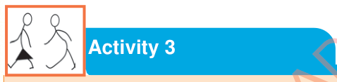

Similarly, you can imitate the movements of other things such as:
1.
The flow or movements of a river.
Walk slowly while swaying your hands like the motion of water waves;
2.
The movements or motion of the wind.
Stand upright and move your arms left and right to mimic the blowing of the wind; and
3.
The movements of the rain.
Stretch out your arms, then use your fingers and palms to imitate the falling of the raindrops.

Activity 3
Use body movements and voice to act the movements of any non-living thing.
Importance of body movements in acting
Body movements are very important in acting because they help the actor to:
(a)
Express inner emotions such as happiness, sadness, anger or anxiety that cannot directly be shown through words.
For example, holding the cheek can express sadness even without words;
(b)
Add reality to acting.
When the actor uses the correct body movements, the audience can believe and understand more of what is being performed;
(c)
Communicate with the audience.
Body movements are also used to convey messages and feelings to the audience, especially if there are no spoken words; and